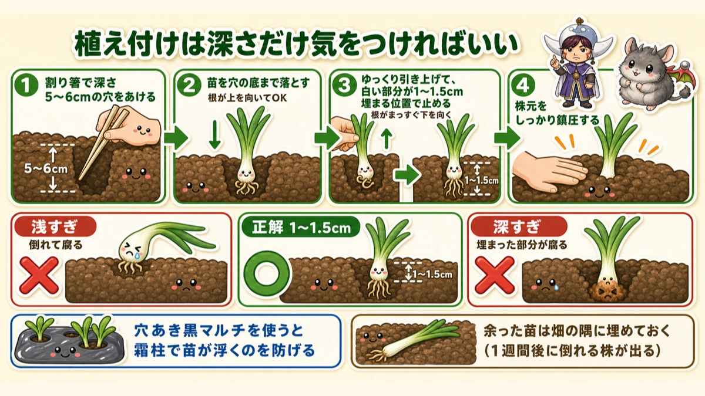
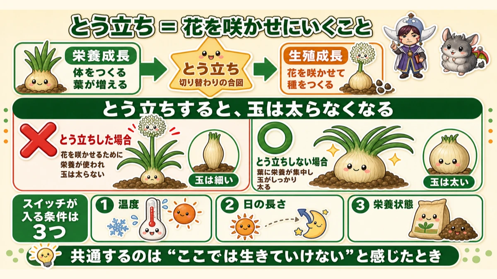

玉ねぎの育て方｜苗選びから冬越し・収穫・保存までの手順と失敗診断
📖 この記事の目次
この記事で分かること
- 苗は『根が残っているか』『細すぎないか』『太すぎないか』をセットで見ます。
- 品種選びは、収穫したい月と、穫ったあとに保存するかどうかから始めます。
- 植え付けでは、根を土に収め、葉の分かれ目を埋めず、株元を安定させます。
- 葉の変色や倒れ方は、季節・根・株元も見てから対処を選びます。
- 追肥の終了、水やり、根の扱いには複数の方法があります。条件をそろえて判断します。
- 収穫後は『早く食べる玉』『保存する玉』『傷んだ玉』を分けて管理します。
玉ねぎを始めるとき、最初に悩むのは「どの苗がええんやろ」ですよね。売り場では、大きな苗ほど頼もしく見えます。でも、小さければ小さいほど安心というわけでもありません。ちょうどよい苗を、ちょうどよい時期に植える。この組み合わせから考えると、冬の世話までつながってきます。
8150（えいこう）です🌱 このページは、秋に苗を植えて翌春以降に収穫する育て方の段取り帳です。すぐ作業したいみなさんは『早見』と『作業の手順』へ。すでに植えていて様子が気になるなら、『失敗の見分け方』から使ってください。
玉ねぎには、種から苗を育てる方法や、小さな球を植える方法もあります。それぞれ出発点が違うので、同じ暦にはできません。この記事の中心は購入苗。種まきは準備の選択肢として、小さな球を植える方法は別の栽培として区別します。
長く畑にいる野菜ですが、毎日何かを足す必要はありません。土が乾いているのか、根が浮いているのか、そろそろ収穫なのか。見るところを決めておけば、世話のしすぎも減らせます。全部覚えてから始めなくても大丈夫。作業のたびに必要な章へ戻る使い方で十分です☺️
早見：玉ねぎの育て方（ひと目で分かる数字）
買う前に確認する数字と予定
- 種まき：8月下旬〜9月中旬の説明があります。地域・品種で違うため、種袋の地域別の適期を優先します。購入苗なら、自分での種まきは不要です。
- 育苗期間：約55日という栽培例があります。日数が来ればどの苗も植えられる、という意味ではありません。最後は太さと根の状態も確認します。
- 苗の植え時：11月〜12月上旬が一つの目安です。秋植えの説明であり、全国共通の締め切りではありません。苗の表示と地域の適期を確かめて予定に入れます。
- 苗の太さ：鉛筆くらい、鉛筆より少し細めという目安があります。数値で示す説明では、最も太いところで6〜8mm。極端に太いものも、頼りないほど細いものも避けます。
- 苗の長さ：20〜25cmという説明があります。葉の長さだけで良し悪しは決まりません。太さ、根の残り方、株元の傷みも見ます。
- 株間と列の間隔：どちらも15cmで植える実演があります。苗1本に場所を1か所確保する計画の目安です。選ぶ品種や穴あきマルチの配置と照らし合わせます。
- うね幅：共通の幅は設定しません。販売される穴あきマルチの幅に95cm・135cmという例がありますが、これはフィルムの幅です。端を固定する部分も含むため、そのままうね上面の幅にはしません。
- 植える深さ：深さ2cmの実演、白い部分を半分ほど出す方法、葉の分かれ目を埋めない方法があります。基準が違うため、一律に何cmとまとめません。
- 元肥：植える前に準備します。前作の肥料が残る土を使う考え方もあるので、全員共通の配合量は設定しません。土の履歴と使う肥料の表示を確認します。
- 追肥の回数：12月に行ってそこで終える説明と、12月・2月に分ける説明があります。どちらの条件で育てるか、土と肥料の組み合わせから考えます。
- 最後の追肥：有機肥料を使う中生・晩生で遅くとも1月末とする説明と、2月にも施す説明があります。後者には、生育が悪い場合に3月上旬を検討する例もあります。日付だけを取り出して共通の予定にしません。
- 極早生の収穫：3月下旬〜4月上旬の目安と、暖かい地域で早い品種を選んで2〜3月をねらう説明があります。寒い地域で後者をそのまま採用しないことが大切です。
- 早生の収穫：4月下旬〜5月上旬が一つの目安。早生は『わせ』と読み、収穫が比較的早いタイプを指します。
- 中生の収穫：5月下旬〜6月上旬が一つの目安。中生は『なかて』で、早生と晩生の間に収穫を迎える分類です。
- 晩生の収穫：6月上旬〜下旬が一つの目安。晩生は『おくて』で、保存向きの品種を選ぶ候補になります。分類名だけで保存期間は保証できません。
- 収穫までの期間：11月植えの中生・晩生なら、翌年5〜6月までおよそ6〜7か月。月から逆算した予定の幅です。極早生も同じ日数で数えるわけではありません。
- 連作の間隔：同じ場所で続ける考え方と、ネギ・ニンニクの跡地を避ける考え方があります。病気が出た場所は数年あける説明がありますが、一律に何年と決められる材料ではありません。
早見を自分の畑の予定に変える
最初に、苗のラベルの品種名を残してください。『玉ねぎ』だけだと、春に「まだ穫れへんの？」となったとき、収穫の遅い品種なのか、育ちが悪いのかを分けにくくなります。袋や札の写真が1枚あるだけでも助かります。
予定を書くなら、植える日、最後の追肥を考える時期、収穫を見始める月の3つでOKです。追肥の日は生育と天気で見直す余地を残し、収穫は実際の葉と玉を見て決めます。暦は見回りを始める合図であって、株への命令書ではないんですよね。
早く収穫して次の野菜へ場所を渡したいなら、収穫の早い品種が候補になります。保存を重視するなら、遅くまで場所を使うことも予定に入れます。早生を植えて、晩生と同じ長期保存を期待する、といった組み合わせは避けましょう。
- 品種の名前と熟期を残した
- 地域別の植え時を確認した
- 株間と、作業するための通路を確保した
- 前作と病気の履歴を確認した
- 肥料の追加と終了を、同じ栽培方針の中で考えた
- 収穫後に乾かす場所と、食べ切る量を考えた
数字が多くても、まずはこの6つです。幅の広いマルチを買えば、それだけうまく育つというわけでもありません。手が届いて草を取れるか、病気の株を見つけられるか。半年使う場所なので、世話を続けられる広さも大事にしてください。
作業の手順（時期の順）
1．食べる時期と、保存する量から品種を決める
- 『早い時期に食べたい』『次の野菜へ場所を渡したい』『穫ってから少しずつ使いたい』のどれを優先するか決めます。
- 苗の表示で極早生・早生・中生・晩生の区分と、地域に合う植え時を確かめます。
- 畑をいつまで使えるか確認し、収穫後に乾かす場所も確保します。
- 品種を複数植えるなら、場所を分けて札を立てます。早いものと遅いものを混ぜたままにしません。
極早生は『ごくわせ』。早く食べられる魅力がありますが、寒い地域で同じように早く太るとは限りません。冬のうちに葉が十分育つかどうかが違うからです。早さだけで決めず、苗の地域向けの表示も見てください。
保存を考えると、つい株数を増やしたくなるんですよね。でも、乾かす場所が足りなければ、その後の管理が詰まります。畑の面積と同じくらい、『家で風に当てられる量』も見積もっておきましょう。初回から大きな束を全部植えなくても大丈夫です。
2．苗を買う前に、場所と土を整える
- 前に育てた野菜と、病気が出たことがあるかを調べます。
- 雨のあとに水が残るところ、草に覆われて日が届かないところを確認します。
- 前作に入れた肥料の量と、土に残る可能性を考えて元肥の計画を立てます。
- 株間と列の配置を決め、中央まで手が届くようにうねと通路を整えます。
- 穴あきマルチを使うなら、穴の間隔を確認し、風で動かないように端を固定します。
元肥は、植える前に入れておく肥料です。玉ねぎは栽培期間が長いものの、その長さをそのまま肥料の大盛りに置き換えません。よく肥えた前作跡地を使う方法もあります。初めて使う土と、何年も肥料を入れてきた土を同じ扱いにしないのがポイントです。
穴あきマルチは、土の表面を覆う穴付きのシートです。植える場所をそろえやすく、草や霜柱への対策にも使えます。ただ、穴の中の草は出ますし、根が浮かない保証にもなりません。張ったら世話が終わり、ではなく、あとで見る場所を絞れる道具と考えてください。
ここで具体的な肥料の混合量を一律に出さないのは、畑の残りと製品の違いがあるためです。別々の方法から元肥と追肥の量を足し算すると、それぞれの方法が想定した総量を超えます。量を決めるときは、使う製品の表示と畑の履歴に戻りましょう。
3．種から始める場合は、苗づくりも予定に入れる
- 地域と品種の種まき適期を種袋で確認します。
- 苗床・セルトレイ・ポットなど、育てる場所と容器を決めます。
- まいた日と芽が出た日を記録し、植え付け予定までの期間を見ます。
- 苗の生育と根を確認し、植えられる太さへ育ったものを選びます。
- 細いままの苗を予定日だけで植えたり、遅れを取り戻そうと肥料をまとめて追加したりしません。
種からなら数をそろえやすい一方、植える日に適度な太さへ育てる調整が必要です。芽が出たところで完成ではないんですね。苗床では切られた苗がないか、容器では裏側に虫が隠れていないかも見ます。
育苗約55日の例は、予定を考える参考になります。暖かさや品種、容器が違えば育ち方も変わるので、『55日目の苗なら合格』とはしません。初めてで植える時期が迫っているなら、購入苗から始める選択肢もあります。種から全部やらなければ家庭菜園ではない、なんてことはありません☺️
4．購入苗は、束の外側だけで判断しない
- 品種と適期の表示を読みます。
- 太いものだけでなく、束の中に極端に細いものが多くないか見ます。
- 葉の長さより、株元の太さと根の残り方を確かめます。
- 株元が柔らかいもの、傷みが目立つものは植える苗と分けます。
- 葉先が少し黄色いだけで全部を不良と決めず、根と株元まで確認します。
狙うのは、太さに無理がなく、根がしっかり残った苗です。地上の葉が立派でも、抜き取る際に根が大きく傷んでいれば、植えたあとの出だしで困ります。逆に葉先の色が少し悪いだけで、根と株元が健全な苗まで捨てる必要はありません。
私にも、鉛筆ほどの太さになる前の細い苗を植えて、玉が十分な大きさにならなかった経験があります。「太すぎないように」を気にして、細い側へ寄りすぎたんですね。苗選びでは、『大きすぎる』と『小さすぎる』の両方を見る。この経験から伝えたいのは、そのことです。
ここから、細い苗は必ず失敗する、という話に広げるつもりはありません。植える時期やその後の条件もあります。ただ、初めての苗選びで、太い苗の危険だけ覚えて細い束を選ぶのは避けてほしいです。真ん中を狙う感じで見比べてください。
5．植える日まで待つ苗は、根を土に収める
- 苗を用意したら、できるだけ適期のうちに植える段取りを組みます。
- 畑の準備が間に合わない場合は、植えられる場所へ仮植えします。
- 根の部分を土に収め、倒れたり根がむき出しになったりしないようにします。
- 本植えする際に、根と株元の状態をもう一度確認します。
- 余った苗も仮植えして残し、植え付け後に欠けた場所がないか見回ります。
仮植えは、正式な栽培場所へ移すまで一時的に土へ植えておくことです。束を袋のまま置きっぱなしにするより、待ち方を決めておけます。余った苗は、補植、つまり抜けた場所への植え直しに使う候補になります。
『待たせる間に水をかけ続ける』ことと、『植える直前に乾いた根を水へつける』ことは別です。保管中の水を避ける説明と、植え付け直前の吸水を行う説明があります。両方を続けて必須作業にせず、まず仮植えと早めの植え付けを軸にします。
6．根を入れ、葉の分かれ目を出して植える
- マルチの穴など、決めた位置の土に、根を収められる穴を作ります。
- 苗の根を土の中へ入れます。長い根を無理に折り曲げて押し込まないよう、穴の余裕を見ます。
- 葉の分かれ目を土に埋めない高さへ調整します。白い部分をどこまで入れるかは、苗の大きさも見ます。
- 根の周囲へ土を寄せ、株元がぐらつかない程度に押さえます。
- 根を傷めるほど力任せに締めたり、苗が倒れるほどふわふわのまま残したりしません。
- 土が乾いて根と土がなじまない場合は、水で落ち着かせます。すでに湿った土へ、同じ量を機械的に足しません。

穴を作る深さと、最終的に苗を埋める深さは別です。根を入れるために穴を深くしても、苗全体をその深さまで埋めたままにはしません。穴の寸法だけ覚えると、肝心の葉の分かれ目まで土の中、となりやすいんですよね。
根が土へ伸び出し、その場所に落ち着くことを『活着』といいます。植えた直後の目的は、まずこれです。苗がまっすぐ立ったか、根が覆われたか、土に接しているかを確認してください。きれいに並べることより、その3点が先です。
最初の1本を植えたら、横から高さを見てください。そこで深さを確かめてから残りを進めると、束を全部深く植えてしまう失敗を減らせます。ちょっと立ち止まる作業ですが、あとで全部直すよりラクです。
7．植えた直後は、根付くまで株元を見る
- 植えた位置を覚え、倒れた株や抜けた場所を確認します。
- 倒れた株は、風で傾いただけか、株元が腐っているかを見ます。
- 根が浮いているだけなら、深さを調整して土との接触を戻します。
- 株元が傷み、戻せない苗は健全なものと分け、仮植え苗での補植を考えます。
- 土の湿りを見て、水が必要か判断します。毎日決まった量を与える約束にはしません。
倒れたから全部水不足、という見方はしないでください。水が多くて株元が傷む場合も、根が浮いて水を吸えない場合もあります。最初に土と根を見るだけで、反対の対処を選ぶことが減ります。
補植するときも、傷んだ苗と同じ深さへそのまま入れません。深植えだったのか、霜柱だったのか、虫だったのかを先に見ます。原因を残したまま新しい苗を入れると、同じ穴でまた困ることになりかねません。
8．冬は、葉色より根の浮きと乾燥を確認する
- 葉先だけが黄ばんでいるか、中心の葉まで失われているかを分けます。
- 土から根が見えていないか、苗が持ち上がっていないか確認します。
- 浮いた株は根を土へ戻し、周囲を落ち着かせます。
- 雨が少なく土まで乾いている場合は、日中の水やりを検討します。
- 寒さで傷みが強い場合は、不織布などによる保護を考えます。
- 暖かい日が続いてよく育っている株では、追肥や被覆を増やす前に必要性を見直します。
霜柱は、土の水が凍って柱状に持ち上がる現象です。苗そのものが耐えられる寒さでも、根が浮けば土から水を吸う条件が悪くなります。寒さ対策は、葉に何かかけるだけではないんですね。
不織布は薄い繊維の布状の資材で、被覆による防寒に使う方法があります。ただ、同じ資材をかけても気温や風で条件は変わります。暖冬に育ちすぎている株へ、保温と追肥をセットで増やすのは避けます。守ることと、大きくしすぎないことの両方を見ましょう。
9．追肥は、足す日と終える日を一緒に考える
- 植え付け前に入れた肥料と、その後に施したものを確認します。
- 品種、季節、葉の生育、根の状態を見ます。
- 選んだ栽培方法の追肥予定に照らし、必要な追加か考えます。
- 追加する場合は製品表示に従い、日付と量を記録します。
- 最後の追肥を済ませたら、その後は小さい株を見て反射的に足さないようにします。
追肥は、植え付け後に追加する肥料です。最後に行う追肥を『止め肥』と呼びます。長く育てる野菜でも、最後まで肥料を追加し続けるわけではありません。収穫に近い時期の過剰な追加は、玉の状態や保存性に影響する説明があります。
ここは、別の方法の日程を途中で継ぎ足さないことが大事です。12月で終える方法に、2月にも施す方法を追加すると、想定していた総量と効く時期が変わります。条件の違いは後ろの『説明が分かれていること』に整理しています。
10．春は草を取り、とう立ちと病気を見回る
- マルチの穴や列の間に出た草を小さいうちに取り、葉への日当たりを保ちます。
- 玉ねぎの根を大きく動かさないよう、株元の近くは慎重に扱います。
- 葉の中央から、つぼみを付けた茎が伸びていないか見ます。
- 葉の変色が広がっていないか、株元が柔らかくなっていないか調べます。
- つぼみが出た株や傷みのある株は、通常の収穫予定とは別に扱います。
とう立ちは、花を付ける茎が伸びることです。つぼみを見つけて切る対処はありますが、それで生育の段階まで元に戻るわけではありません。早めの収穫を考える株として区別します。
玉が見え始めると「土をかけたほうがええかな」と思いやすいです。根が浮いている苗を戻す作業と、太り始めた玉を覆う作業は分けてください。玉が太る時期に入った株へ、苗の冬越しと同じつもりで土をかぶせ続けないようにします。
11．葉の倒れ方と天気を見て収穫する
- 品種の収穫時期に入り、玉が太っているかを確認します。
- 葉が自然に倒れてきた株と、病気や強風で倒れた株を分けます。
- まとめて収穫するなら、全体の約7割が倒れたころという目安も使います。
- 病気の広がりや雨の予想がある場合は、成熟の目安を待ち続けず、前倒しを検討します。
- 保存する健全な玉は、できるだけ土が乾いた晴天時に収穫します。
- 傷めないように抜き、状態別に分けて乾燥へ進みます。
葉が倒れることを『倒伏』といいます。倒伏から約1週間後に収穫する説明もありますが、病気が出た株へ同じ待ち時間を当てはめません。健全な株の成熟を待つことと、傷みを広げないために収穫することでは、目的が違います。
倒れていない早い品種を、玉の大きさを見て収穫する方法もあります。食べるための少量収穫と、まとめて保存する収穫は同じではありません。どちらをしたいかを決めると、判断しやすくなります。
12．乾かし、保存中も傷んだ玉を分ける
- 収穫した玉を見て、健全なものと、傷や腐敗が疑われるものを分けます。
- 晴れて土が乾いていれば、収穫後に畑で乾かします。湿った土や雨が心配なら、雨を避けて風に当てられる場所へ移します。
- 葉を切る時点と残す長さは、採用する保存方法の乾燥工程に合わせます。
- 吊るす場合は傷になるほど締めすぎず、乾燥後に落ちそうになっていないかも確認します。
- 通気を確保し、長期保存する間は直射日光と雨を避けます。
- ときどき確認し、柔らかくなった玉や傷みの進む玉を健全なものから離します。
畑で乾かす工程と、そのあと雨の当たらない場所で乾かす工程があります。『収穫したら日光へ』と『保存は日陰へ』は、別の段階の説明です。いつまでも強い日差しに置く保存方法にはしません。
葉を約15cm残して切り、さらに乾かす方法もあります。一方、葉を短く切ってから乾かす説明もあります。この2つを混ぜて、いちばん短い葉の状態に、長い葉を残す方法の工程を当てはめないようにしてください。乾燥の途中で、切り口と首の湿りも見ます。
早く食べる品種を、保存向きの品種と同じ期間だけ吊るす予定にはしません。よく乾かせば、もともとの品種の保存性まで変わるわけではないからです。収穫後も札を残すと、どれから使うかが決めやすくなります。
失敗の見分け方（症状→原因→やること）
気になる株を見つけたら、『いつから』『1株だけか』『株元はどうか』の順で見ます。黄色い、倒れた、小さい、という見た目だけでは原因を決められません。肥料を足す前に、いったん足元を確認しましょう。ここ、地味やけど大切です。
植えたあとに倒れ、根が土から見えている
- 症状：葉が横になり、根や株元が持ち上がっています。土との間にすき間があります。
- 考えられる原因：植え付けが浅い、周囲の土が落ち着いていない、風や霜柱で動いた可能性があります。
- やること：根を土に収め直し、葉の分かれ目を埋めない高さで周囲を押さえます。株元の腐敗も同時に確認します。
根が浮いた苗へ水だけ追加しても、土との接触が戻るとは限りません。まず植わり方を直し、そのあと土が乾いているかを見ます。根が出た株と、深く埋まって傷んだ株は、どちらも倒れて見えることがあるので分けてください。
苗が立ち直らず、株元が柔らかい
- 症状：倒れたまま戻らず、株元が柔らかい、崩れる、腐ったような状態があります。
- 考えられる原因：深植え、過湿、根の傷み、病気などが候補です。外見だけで病名は決めません。
- やること：傷んだ株を健全な株から分け、植える深さと水のたまりを確認します。補植するなら、同じ問題を残さないようにします。
葉先だけが黄色い株と、株元が腐っている株は扱いが違います。株元まで戻せない状態なら、『もう少し肥料で応援』という対処は合いません。周りの株にも同じ変化が出ていないか見てください。
苗が切られたように倒れ、近くに虫がいる
- 症状：苗が切れたように倒れたり、根元が食われたように見えたりします。
- 考えられる原因：虫による食害が候補です。根の浮きや腐敗と区別して調べます。
- やること：傷んだ部分と株の周囲の土を確認し、見つけた虫を取り除きます。ほかの株と、育苗容器の裏も見回ります。
穴があるだけで特定の虫と決めないことが大切です。葉が食われているのか、土に近いところが切れているのか、株元の中が傷んでいるのかで探す位置が変わります。苗を引っ張って確認する際も、健全な株の根まで切らないようにしましょう。
冬に外側の葉や葉先が黄色くなる
- 症状：寒い時期に、外側の葉が枯れたり葉先が黄色くなったりします。
- 考えられる原因：低温による傷みが候補です。ただし乾燥、根の浮き、株元の傷みも確認が必要です。
- やること：中心の葉と根が残っているか見ます。外葉の変色だけで抜かず、土と株元を確認して必要な保護を考えます。
冬は、夏の葉物のような勢いで葉が増えなくても不思議ではありません。『止まって見える』だけで肥料不足とは言えないんですね。一方、中心まで枯れ込み、根も傷んでいる株を、正常な冬越しと決めつけて放置もしません。
雨が少なく、土が乾いて苗に張りがない
- 症状：雨が長く降らず、土が乾き、葉に張りがなくなっています。
- 考えられる原因：水分不足の可能性があります。根が浮いて吸えない場合も候補です。
- やること：表面だけでなく根元の土も確認し、必要なら日中に水を補います。朝夕の凍結が心配な時間や、すでに湿った土への習慣的な水やりは避けます。
『冬の水やりは少なく』という話は、土の乾きまで無視する意味ではありません。逆に1回乾いたからといって、その後も毎日与える予定にはしません。雨が降ったら条件が変わるので、前回の世話を自動で繰り返さないようにしましょう。
春になっても、小さい株が目立つ
- 症状：周りは大きくなっているのに、細い株が残り、玉も小さいままです。
- 考えられる原因：植えた苗の小ささ、植え時、冬の傷み、根の状態、土づくりや肥料の時期などが候補です。
- やること：苗の写真と植え付け・追肥の記録を振り返ります。終盤の肥料追加だけで取り戻そうとせず、いまの収穫と次の苗選びを分けて考えます。
小さい苗から出発した株と、大きくなる途中で傷んだ株では原因が違います。全部同じ『成長が遅い』にしてしまうと、翌年も同じ苗を買ってしまいます。植えた時点から小さかったか、途中で葉を失ったかだけでも残しておくと、次の改善につながります。
葉が波打ち、でこぼこしている
- 症状：葉に波のようなうねりや、でこぼこが出ています。
- 考えられる原因：肥料が多い状態として説明される例があります。ただし、波打ちだけで原因を確定しません。
- やること：元肥と追肥を確認し、追加を控えて観察します。変色や腐敗、周囲への広がりがある場合は、それらも別に調べます。
生育がよいからもっと足す、葉が変だからとりあえず足す。その両方で肥料が増えてしまうことがあります。すでに施した分をすぐ取り除くのは難しいので、まず追加を止めて、次の土づくりで量を見直す材料にします。
葉の中央から、丸いつぼみの付いた茎が伸びる
- 症状：いつもの葉とは違う茎が出て、その先につぼみが付きます。
- 考えられる原因：とう立ちです。太い苗や植え付け時期、その後の低温などが関係する説明があります。
- やること：つぼみを早めに除き、その株は早い収穫を考えます。切れば通常の玉へ戻る、とは期待しません。

とう立ちしたから即すべて食べられない、というわけでもありません。腐敗がなく、収穫した玉が健全なら、硬い芯の状態を確かめて使う考え方があります。ただ、長く保存する玉と一緒にせず、早く使う候補へ分けます。
春の葉の変色が、何株にも広がっている
- 症状：一部だけでなく複数の株で葉が傷み、枯れ込みが進んでいます。
- 考えられる原因：べと病などの病気が候補です。外葉だけの寒さによる傷みと分けて見ます。
- やること：傷んだ株を分け、周囲を見回ります。収穫時期に近い場合は、倒伏を待つより前倒しの収穫を検討します。
大雨のあとには、葉の傷みが広がっていないかも見回ります。収穫に近い時期に病気が広がる場合は、予定を早める判断も必要です。雨のあとに葉が変わったときは、日付だけで待ち続けず、変化の速さも確認してください。
収穫前に葉が倒れたが、成熟か傷みか分からない
- 症状：葉が倒れていますが、収穫の合図なのか判断できません。
- 考えられる原因：自然な成熟、強風、病気による傷みなどがあります。
- やること：玉の太り、周囲の倒れ方、倒れた部分の腐敗を見ます。柔らかく崩れる株を、健全な株の倒伏と同じ扱いにしません。
『倒れた』は形の説明で、原因の説明ではありません。品種の収穫期に複数の健全な株が倒れる状態と、時期の早い1株がぐにゃっとなる状態は別です。倒伏を数える前に、どちらの倒れ方かを確認しましょう。
玉が地表へ出てきた
- 症状：丸く太った部分が土の上に見えます。
- 考えられる原因：玉が太ってきた状態のことがあります。根が浮いている苗とは別です。
- やること：根の露出と株の不安定さがないか確認します。太る段階に入った玉を、見えたからという理由だけで深く覆いません。
土寄せを考える場面は、苗の根が見えたり、寒さで浮いたりしたときです。春に玉が大きくなる場面へ、冬の苗の処置をそのまま持ち込まないこと。見えているものが『根』か『玉』かを分けるだけでも、迷いは減ります。
保存中に柔らかい玉が出る
- 症状：保存した玉の一部が柔らかくなり、傷みが進んでいます。
- 考えられる原因：乾燥不足、傷、もともとの病気、保存環境、品種の保存性などが候補です。
- やること：傷んだものを離し、残りの玉と首の乾燥、雨、通気を確認します。腐敗した玉を健全な玉と一緒に保管し続けません。
保存は、袋へ入れた日で完了ではありません。玉を重ねていると奥の変化が見えにくいので、確認できる置き方にしておきます。収穫前から傷んでいたものと、乾かし方に問題があったものを分けて記録すると、次の改善も具体的になります。
説明が分かれていること
玉ねぎの説明を見比べると、「こっちではやめろと言うのに、別の方法ではやっている」が出てきます。どちらかを平均して新しい方法を作るより、何を育て、どんな土と肥料を使っているかを見るほうが判断しやすいです。ここでは、栽培説明や実演で条件が分かれている点を整理します。
苗は鉛筆くらいか、少し細めか
- Aという説明：鉛筆程度の太さを目安に苗を選びます。
- Bという説明：鉛筆よりやや細めを選び、数値では最も太いところを6〜8mmとする説明があります。
- どう考えればよいか：両方とも、極端に太い苗や、弱々しい小苗をすすめる話ではありません。目安の表現を細かく争うより、根が残り、太さに偏りがない束を選びます。
鉛筆にも多少太さの違いがあるので、目安の物だけで精密な線引きはできません。購入先に地域向けの苗の目安があれば、その説明も確認してください。『細め』を『いちばん細いもの』へ読み替えないことが、初心者には特に大切です。
植える深さは、cmか白い部分の割合か
- Aという説明：白い部分を半分ほど地表へ出す方法や、葉の分かれ目より下まで土を入れる方法があります。
- Bという説明：専用の道具を使い、深さ2cmで植える実演があります。
- どう考えればよいか：苗の部位を基準にする説明と、道具の寸法を基準にする説明を混ぜません。根は土に収め、葉の分かれ目を埋めず、ぐらつかない位置へ調整します。
白い部分の長さが違う苗へ、同じ割合と同じcmを同時に当てはめることはできません。数字を守ったつもりでも、葉が分かれるところまで埋まるなら見直してください。最初の苗で高さを確かめる作業は、こういう違いにも対応できます。
長い根は残すか、切りそろえるか
- Aという説明：根をできるだけ切らずに植えます。
- Bという説明：根を2〜3cmに短くし、植え付けやすくする実演があります。根の成長を促すという説明も伴います。
- どう考えればよいか：作業をしやすくする話と、生育の優劣の話を分けます。同じ条件で比較した確定結果としては扱いません。初めてなら、根を収められる穴を作り、無理に切らず植える方法から考えられます。
土の付いた苗と、根が露出した苗でも扱いは違います。根を切る実演を見て、すべての苗の根を一律に短くする必要はありません。根がもともと少ない苗へ、長い根の処理をそのまま当てはめないようにしましょう。
植える前の苗は水につけるか、つけないか
- Aという説明：購入苗を管理している間は水を与えず、待つなら仮植えします。
- Bという説明：購入後に根が乾いた苗を、植え付ける直前に水へつける実演があります。
- どう考えればよいか：保管中と植え付け直前では時間の条件が違います。毎日浸して保存する方法へ広げず、早めの植え付けと仮植えを先に考えます。
水へ何かを加える実演もありますが、商品名や希釈条件を確認できないものは、家庭での必須手順にはしません。資材を追加することより、苗を待たせる日数を減らし、根を土へ収める段取りを整えるほうを先にしてください。
冬の水やりは不要か、乾いたら必要か
- Aという説明：冬は水やりをしない、あるいはほとんど必要ないとします。
- Bという説明：雨が長く降らず、土が強く乾く場合には水を補うとします。
- どう考えればよいか：通常の降雨がある畑と、乾き切った土では条件が違います。植え付け直後の水も別に考え、冬は土の湿りと凍結の心配を見て判断します。
水やりを控える説明にも、雨がなくカラカラになった場合の例外があります。『冬だから不要』を『どんな乾きでも不要』にしないこと。水を補う場合も日中を選ぶ説明があり、夕方に毎日与える方法と同じではありません。
有機肥料の追肥は1月末までか、2月も行うか
- Aという説明：中生・晩生の有機栽培では最後の追肥を遅くとも1月末までとし、12月に施したなら追加を不要とする説明があります。
- Bという説明：12月と2月に追肥し、生育が悪い場合だけ3月上旬に最後の追加を考える実演があります。
- どう考えればよいか：『有機肥料』という大きな分類だけで、同じ効き方だと決めません。元肥、肥料の形状、気温、熟期、生育をそろえた一つの方法として判断します。
この違いは、カレンダーを一本にするだけでは解決しません。土に入れたものがいつ利用されるかは、肥料と土の状態でも変わるからです。どちらの日程も足し合わせて全部実行、にはしないでください。迷う場合は購入した肥料の表示や、地域と品種に合う栽培案内へ戻ります。
化成肥料の追肥日程も、有機栽培と同じか
- Aという説明：分解を待つ肥料では、冬の早い時期に施し、春の終盤へ追加を持ち越さない計画があります。
- Bという説明：化成肥料を使う栽培説明には、2月下旬と3月中旬の2回を基本にする例があります。
- どう考えればよいか：肥料の種類が違う予定を、同じ回数表へまとめません。元肥に何を使ったかも含めて照合します。日程だけを有機肥料へ移すことは避けます。
2回という数字が同じでも、12月・2月と、2月下旬・3月中旬では効かせる予定が違います。回数が一致したから同じ方法、ではないんですね。この記事の追肥欄を使うときは、『いつ』『何を』『どれだけ入れたか』を一緒に記録してください。
極早生は2〜3月に穫れるか、3月末以降か
- Aという説明：極早生・超極早生の収穫を3月下旬〜4月上旬とする熟期の解説があります。
- Bという説明：暖かい地域で早い品種を選び、2〜3月の収穫をねらう説明があります。
- どう考えればよいか：違う地域と品種の説明を、そのまま日数の競争にしません。寒い場所では、冬に葉を増やす時期の条件が違います。種袋や苗の地域別の目安を優先します。
収穫が早い品種なら、どこでも冬の間に玉が完成する、という意味ではありません。春に畑を空ける予定がある場合こそ、地域に合うかを先に確認しましょう。別の場所の最速の例を基準に予定を詰めると、次の野菜まで待つことになります。
同じ場所で続けるか、ネギ類のあとを避けるか
- Aという説明：玉ねぎ用の場所を決めて、同じ場所で続ける考え方があります。
- Bという説明：ネギやニンニクの跡地を避け、玉ねぎの病気が出た場所は数年あける考え方があります。
- どう考えればよいか：病気が出た履歴を省いて『続けられる』とは判断しません。まず前作と病気を確認し、場所を替えられるならその選択肢も持ちます。
材料には、どの土でも何年あければ問題が消える、という共通の数字はありません。空ける年数だけで土の状態を保証することもできないので、病気の履歴を残すことが先です。見た目が良かった年も、育てた品種と場所は記録しておきましょう。
中生なら、必ず年末まで保存できるか
- Aという説明：熟期の一般的な解説で、中生は年末まで、晩生は翌春までという目安があります。
- Bという説明：個別の赤玉ねぎの実演では、中生としながら夏までの保存を目安にする説明があります。ただし、品種を確定できていない例です。
- どう考えればよいか：分類名だけで保存期限を決めません。品種表示と収穫時の状態、乾燥、置き場所を見ます。いずれの期間も保証ではありません。
同じ熟期の名前が付いていても、全部同じ保存性というわけではありません。収穫して札を外すと、その違いが分からなくなります。品種ごとに分け、早く食べるものから使う段取りを残しておくとラクです。
葉が倒れてから待つか、早めに収穫するか
- Aという説明：全体の約7割の倒伏を目安に収穫する、または倒伏から約1週間待つ方法があります。
- Bという説明：早く食べる品種では玉の大きさで収穫し、病気が広がる場合には倒伏前でも収穫する例があります。
- どう考えればよいか：健全な株の成熟、食べるための収穫、病気への対応を分けます。保存を重視して待つ場合も、傷みが進む状態まで待ち続けません。
収穫を前倒しする説明は、どの株も未熟なうちに抜くすすめではありません。反対に、成熟の目安は病気の株へ待機を命じるものでもありません。株の状態を先に見てから、日数の目安を使いましょう。
収穫直後に葉を切るか、先に乾かすか
- Aという説明：根と葉を短く処理してから乾燥へ進む方法があります。
- Bという説明：少なくとも1日乾かしてから葉を切り、約15cmを残してさらに乾かす方法があります。
- どう考えればよいか：葉を切る時点、残す長さ、そのあとの乾燥を一つの流れとして選びます。別々の工程の都合のよい部分だけをつなぎ合わせません。
乾燥の日数だけで合否を決めることも避けます。晴れと雨、畑と軒下では乾き方が違います。首や切り口が湿った状態の玉を、日数が過ぎたからとまとめてしまわないようにします。長期保存の場所は、雨が当たらず、風が通るかを確認してください。
よくある質問
初めてなら、種からと苗からのどちらがよいですか
植える時期が近いなら、購入苗から始めると苗づくりの調整を省けます。
種からは数を用意しやすい一方、適期にちょうどよい太さへ育てる世話が必要です。
初回は苗で一連の流れを見て、次に育苗を加える進め方でも大丈夫です。
太くて長い苗が、お買い得ではないのですか
葉の長さと、育てやすさは同じではありません。
太すぎる苗にはとう立ちの心配があり、根が傷んでいる苗は植えたあとの出だしも気になります。
値札だけでなく、根・太さ・株元の3つを見て選びましょう。
細い苗なら、とう立ちを心配しなくてよいですか
細い苗を選べば全部解決、とは考えません。
小さすぎる苗では冬越しや、そのあとの玉の太りに困ることがあります。
極端に太い苗を避けつつ、弱々しい小苗にも寄りすぎない選び方です。
葉先が黄色い購入苗は使えませんか
葉先の変色だけでは判断できません。根が残り、株元が健全かを見ます。
根が露出して売られている苗には葉先が傷んだものもあります。
株元が柔らかい、根がほとんどない、といった状態とは分けて選んでください。
買った苗をすぐ植えられないときはどうしますか
適期の中で早めに植える段取りを組み、待つなら根を土へ収めて仮植えします。
袋のまま置いて水だけかけ続ける方法へはしません。
本植えの際にも、根と株元の状態を確認してください。
余った苗は、全部捨ててもよいですか
植えたあとに欠ける場所があると、補植する苗が必要になります。
余った健全な苗は仮植えしておくと、植え直しを考える際に使えます。
ただし、適期から大きく外れたあとまで、同じ条件で補植できるとは限りません。
根が長いので切ってもよいですか
根を残す方法と、短くして植える実演があります。
すべての苗で切ることを必須にせず、まず根を収められる穴を作って考えます。
切る方法が同じ条件で必ず優れると確認されたわけではありません。
マルチを使えば、草取りは不要ですか
シートで覆った場所は管理しやすくなりますが、穴の中や端には草が出ます。
玉ねぎの葉を陰にする前に取り、株元の根を大きく動かさないようにします。
マルチは草を見なくてよくなる道具ではなく、見る場所を減らす道具です。
マルチの幅と、うね幅は同じにしてよいですか
フィルムには、うねの側面と端を固定する分も必要です。
表示された95cmや135cmを、そのままうね上面の幅にしません。
穴の列数、固定の余裕、中央へ手が届くかを見て配置を決めます。
プランターでも、畑の水やり予定を使えますか
容器では土の量や乾き方が畑と違うので、同じ回数にはしません。
根が浮いていないか、土が湿っているか、余分な水が抜けるかを実際に見ます。
この記事の畑向けの早見だけで、容器の寸法や毎日の水量まで決めないようにしてください。
冬の外葉が枯れたら、植え直しますか
外側だけの変化なら、中心の葉と根を確認してから考えます。
寒さによる傷みの例もあるため、葉先の黄ばみだけで抜きません。
株元まで傷んでいる場合や、根が浮いた状態とは分けて対処します。
冬に雨が降らないときも、水やりを我慢しますか
土が乾き切る条件なら、水を補う説明があります。
冬だからという理由だけで強い乾燥を放置せず、土と根の状態を確認します。
必要な場合は日中に行い、その後も毎日続ける約束にはしません。
有機肥料なら、必ず1月末で終わりですか
1月末までに終える説明がありますが、2月にも施す栽培例もあります。
同じ『有機』でも、元肥、形状、気温、品種、生育の条件が違います。
自分の栽培方針を確認し、別の方法の追加だけを継ぎ足さないようにします。
小さい玉を見つけたら、肥料を増やしますか
収穫に近い時期の小ささを、追加肥料だけで取り戻そうとはしません。
苗の大きさ、植え時、冬の傷み、根、これまでの肥料を振り返ります。
肥料が足りない可能性を考える場合も、時期と残っている量を先に確認してください。
太く育ちすぎた株は、保温すればとう立ちしませんか
低温に当たる条件を変え、早めの収穫をねらう試行はあります。
ただし、保温で必ず防げるという確認ではありません。
実際の葉とつぼみを見回り、追加の肥料や過度な保温が必要かも見直します。
ネギ坊主を切れば、いつもの玉ねぎに戻りますか
つぼみを除く対処はありますが、とう立ちそのものを取り消すわけではありません。
その株は通常の収穫予定と分け、早めに収穫することを考えます。
健全な玉でも、芯の硬さや品質を確認し、長く保存する玉とは区別します。
玉の上が見えたら、土をかけますか
玉が太る段階で見えてきた状態と、苗の根が浮いた状態を分けます。
根が露出して株が不安定なら直しますが、丸い部分が見えたことだけで深く覆いません。
何が土から出ているかを見てから判断してください。
葉が倒れるまで、収穫を待たなければいけませんか
健全な株の倒伏はよい目安ですが、すべての条件で必須ではありません。
早く食べる品種を玉の大きさで穫る方法や、病気のため前倒しする場合があります。
保存目的、品種、傷みの進み方を一緒に見ます。
1株だけ倒れたら、全部抜きますか
その株だけが風や傷みで倒れた可能性もあるので、全体の収穫とは分けます。
品種の時期、玉の太り、ほかの株の倒れ方を確認してください。
まとめて収穫する場合は、全体の約7割の倒伏という目安もあります。
雨が続きそうでも、保存用は晴れるまで待ちますか
晴れて土が乾いたときが望ましいですが、病気が進む場合まで待ち続けません。
前倒しする必要があるなら、雨を避けて風に当てられる乾燥場所も準備します。
天気だけでなく、株の傷みが進む速さも判断材料です。
吊るせば、どの品種も翌春まで保存できますか
乾かすことと、品種本来の保存性は別です。
早く食べるタイプに、晩生向きの長期保存を期待しないようにします。
品種の表示を残し、傷みがないか確認しながら使ってください。
小さな玉を植えるホーム玉ねぎも同じ育て方ですか
秋に苗を植える栽培と、種球から始める栽培は別です。
種球の適期や大きさ、分球の説明を、購入苗の選び方へそのまま移しません。
まず、手元の植えるものが苗なのか、種球なのかを確認してください。
学ぶ：玉ねぎのしくみ🔬
食べる丸い部分は、葉の根元が重なったもの
玉ねぎを縦に切ると、白い層が何枚も重なっています。ここを、みなさんにぜひ見てほしいです。いつも料理で切っている野菜なのに、育て方の話が急に実物へつながるんですよね。
食べている玉は、葉の根元が厚くなったものを中心にできています。下に付くヒゲのような部分が根。玉の底の短く平たい部分が茎で、そこから根が出ます。『土の近くにある丸いもの』だから全部根、ではありません。
- 緑の細長い部分：地上へ伸びた葉です。
- 玉の中の厚い層：葉の根元が重なった部分です。
- 底の小さく平たい部分：短い茎です。盤茎と呼びます。
- 底から出る細いもの：根です。
名前を全部覚える必要はありません。切った玉の底と層を見て、「ここに葉が重なってるんやな」と分かれば十分です。料理のついでに、底が少し残るように縦へ切って観察すると、層と根の位置を見比べられます。切る作業は安全に行ってくださいね。
葉を育てる時期と、玉が太る時期を分けて考える
栽培では、苗が根付き、葉が育ち、そのあと玉が太って収穫へ進みます。品種によってその時期が違うため、早生も晩生も同じ月に同じ姿になるわけではありません。
葉は、玉を育てるために大切な部分です。葉が少ない株や、冬に葉を大きく失った株を、春になって肥料だけで別の株と同じ状態へ戻すのは難しいことがあります。だから苗を選ぶところと、冬に根を浮かせない管理がつながるんですね。
収穫時に葉が倒れる話は、葉を人の手で倒せば玉が大きくなるという意味ではありません。自然な成熟の様子を、収穫の手がかりにしている話です。まだ育っている葉を切ったり、折ったりして成熟を急がせる手順にはしないでください。
とう立ちは、花を作る方向へ進んだサイン
葉や根などを育てる段階を『栄養成長』、花と種を作る段階を『生殖成長』と呼びます。とう立ちで出てくる茎は、花を付けるためのものです。玉を収穫したい時期には、その方向へ早く進まないように育てたいわけです。
材料には、ある程度大きく育った苗が低温を受けると、花芽を作る方向へ進むという説明があります。苗の大きさと、その後の寒さの組み合わせが関係する、というところが栽培で使う要点です。太い苗が『寒いとすぐ枯れる』という話とは区別してください。
低温の目安を約10℃以下、期間を合計約30日として説明する例もあります。ただし、どの品種も30日目に必ず切り替わる計算式として使うものではありません。苗の大きさや品種、実際の温度の条件があるので、家庭の最低気温を数えて安全保証にはしません。
つぼみを切っても、その株が経験した条件は消えません。花への養分の使われ方を抑える対処と、成長の方向を初めからやり直すことは別です。とう立ちした株を早めの収穫へ分けるのは、この違いがあるためです。
肥料を入れた日と、植物が使う時期は同じではない
肥料は、土へ入れた瞬間にすべてが根へ届くわけではありません。分解を経て利用されるものでは、土の温度や水分などでも進み方が変わります。『先月入れたのに小さい』だけでは、足りないとも、もう効き終えたとも判断できないんですね。
有機肥料の追肥を早く終える方法には、あとで効くことを考えて予定を組む意味があります。別の形状の肥料を、違う条件で施す説明と同じ日付へそろえられないのもそのためです。肥料の名前だけでなく、実際の製品と畑の状態が必要になります。
止め肥は、植物をただ飢えさせればよいという考え方ではありません。葉を育てるための養分を確保しつつ、収穫に近い時期へ過剰な追加を持ち越さない調整です。肥料を足すかどうかを考える前に、いまがどの段階かを見る。この順番で判断すると、追肥の話が整理しやすくなります。
霜柱の対策と、とう立ちの対策は同じではない
霜柱で困るのは、根が持ち上がって土との接触が悪くなることです。とう立ちで困るのは、収穫前に花を付ける方向へ進むことです。どちらにも寒さの話が出ますが、起こっていることは違います。
根が浮いたら土へ戻す対処が必要で、葉に布をかけるだけでは根の位置は直りません。反対に、太く育った株の根を土へ押し戻しても、とう立ちの心配がなくなるわけではありません。『寒さ対策』の一言でまとめず、何を守りたい作業かを分けましょう。
こうやって実物の葉、根、玉、つぼみを見比べると、暗記する数字は少し減ります。今日は苗の根を見る日、春は玉とつぼみを見る日。季節で観察する場所が変わる、と考えると、長い栽培でも続けやすいかなと思います🔬
まとめ
ここまで読んでくださって、ありがとうございます！ 玉ねぎで最初にそろえたいのは、『地域と品種に合う予定』『無理のない太さの苗』『根が落ち着ける植え方』の3つです。
- 苗のラベルを残し、いつ収穫する品種かを確認します。
- 根と株元を見て、極端に太い苗にも細い苗にも偏らず選びます。
- 植えるときは根を収め、葉の分かれ目を出し、周囲の土を落ち着かせます。
- 冬は外葉の色だけで決めず、中心の葉・根の浮き・土の乾きを確認します。
- 追肥の日程は、元肥と使う肥料を含む一つの方法として考えます。
- 春は草とつぼみ、病気の広がりを見回り、通常の収穫と前倒しする株を分けます。
- 保存する玉はよく乾かし、品種と状態を見ながら、傷んだものを離して管理します。
始める前なら、今日やることは苗の品種表示を見るところからです。もう植えているなら、株元をひとつ見てみてください。根が土に収まっているか、湿りすぎていないか。その小さな確認が、次にやることを教えてくれます。
春まで長いなあ、と思うかもしれませんが、毎日何かを足さなくても大丈夫です。必要なときに見て、必要な分だけ手をかける。まずはそのくらいのペースで、一緒に玉ねぎを待つ感じで始めてみてください🧅
玉ねぎ苗（中晩生 ネオアース）
記事で「太すぎる苗を買ってはいけない」と書きましたが、逆に細すぎても大きくなりません。中晩生は保存がきくので、6月に穫って年明けまで食べられます。100本あれば家族の1年ぶんです。
![[商品価格に関しましては、リンクが作成された時点と現時点で情報が変更されている場合がございます。]](https://hbb.afl.rakuten.co.jp/hgb/56d218b8.a80573a6.56d218b9.1d398fba/?me_id=1241438&item_id=10055324&pc=https%3A%2F%2Fthumbnail.image.rakuten.co.jp%2F%400_mall%2Fnogyoya%2Fcabinet%2F03498327%2Fimg60507283.jpg%3F_ex%3D240x240&s=240x240&t=picttext "[商品価格に関しましては、リンクが作成された時点と現時点で情報が変更されている場合がございます。]")

穴あき黒マルチ（15cm間隔）
玉ねぎは株間15cmでびっしり植えます。この穴あきマルチなら、間隔を測らずに植えられるので、100本植えてもあっという間です。にんにくとも共用できます。
![[商品価格に関しましては、リンクが作成された時点と現時点で情報が変更されている場合がございます。]](https://hbb.afl.rakuten.co.jp/hgb/55521906.a3595d78.55521907.92994d18/?me_id=1225177&item_id=10035007&pc=https%3A%2F%2Fthumbnail.image.rakuten.co.jp%2F%400_mall%2Fssn%2Fcabinet%2F02584092%2F07223762%2F4980356008386_1.jpg%3F_ex%3D240x240&s=240x240&t=picttext "[商品価格に関しましては、リンクが作成された時点と現時点で情報が変更されている場合がございます。]")
牛ふん堆肥（完熟）
玉ねぎは、肥料そのものより「土のふかふかさ」で太り方が変わります。冬のあいだ根がゆっくり伸びられる土にしておくのが、春の肥大につながる。完熟のものを選んでください。未熟な堆肥は、根を傷めます。植え付けの2週間前までに入れておくのが理想です。
![[商品価格に関しましては、リンクが作成された時点と現時点で情報が変更されている場合がございます。]](https://hbb.afl.rakuten.co.jp/hgb/55e75fe5.20db4cd1.55e75fe7.d1ec32cc/?me_id=1194164&item_id=10000517&pc=https%3A%2F%2Fthumbnail.image.rakuten.co.jp%2F%400_mall%2Fgardening%2Fcabinet%2Fhiryousennyouhiryo%2Fdsc_2803.jpg%3F_ex%3D240x240&s=240x240&t=picttext "[商品価格に関しましては、リンクが作成された時点と現時点で情報が変更されている場合がございます。]")
不織布
小さい苗を植えた方、植えるのが遅れた方は、霜柱で苗が浮きます。不織布は換気がいらないので、かけっぱなしにできるのが強みです。
![[商品価格に関しましては、リンクが作成された時点と現時点で情報が変更されている場合がございます。]](https://hbb.afl.rakuten.co.jp/hgb/56bc237a.e97551b1.56bc237b.2513ed10/?me_id=1310260&item_id=10000879&pc=https%3A%2F%2Fthumbnail.image.rakuten.co.jp%2F%400_mall%2Fdiokasei%2Fcabinet%2F007fusyokufu%2F12g%2Fimgrc0092049705.jpg%3F_ex%3D240x240&s=240x240&t=picttext "[商品価格に関しましては、リンクが作成された時点と現時点で情報が変更されている場合がございます。]")